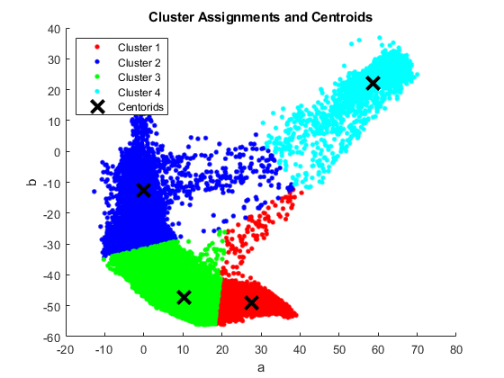
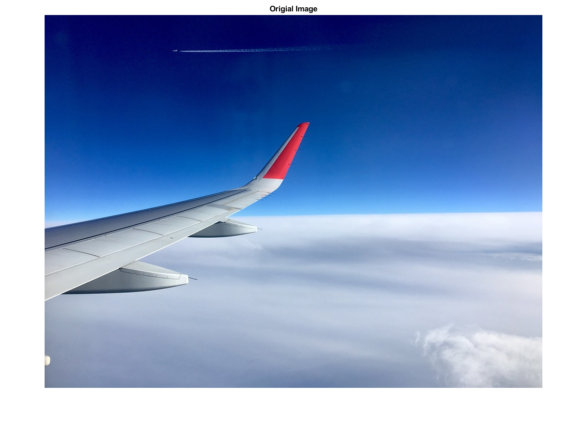
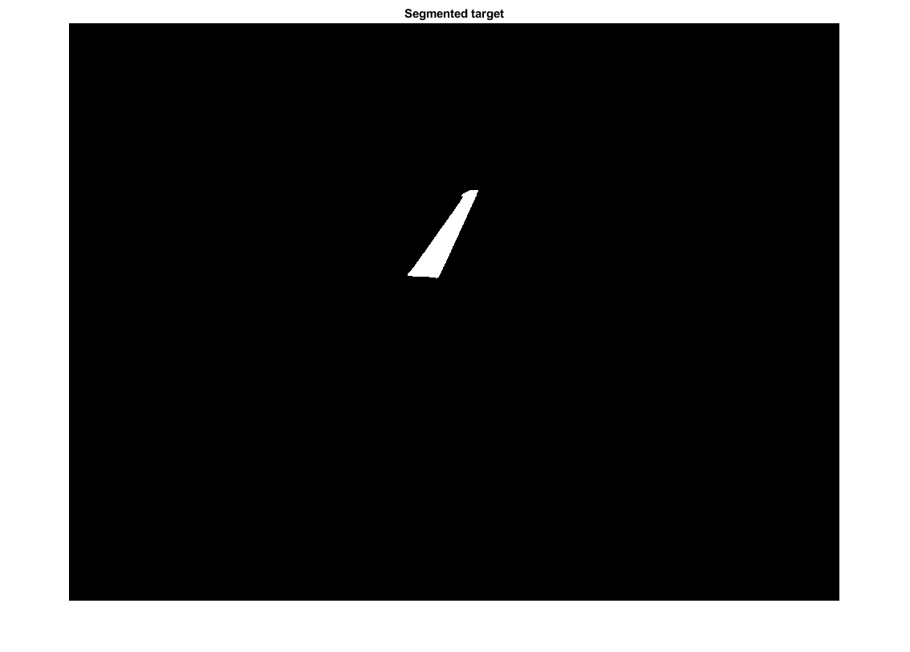

Machine Vision Homework 4
- Problem 2 Part 2
- Author: Xinyi Cai
Contents
Housekeeping
clear all; clc
Load the image
img_RGB = imread('wingtip.jpg');
Step 1: RGB -> Lab
img_Lab = rgb2lab(img_RGB);
Step 2: Clustering in a-b domain
[rows, columns, depth] = size(img_Lab);
for i = 1:rows
for j = 1:columns
img_L(i, j) = img_Lab(i, j, 1);
img_a(i, j) = img_Lab(i, j, 2);
img_b(i, j) = img_Lab(i, j, 3);
end
end
img_ab = [img_a(:), img_b(:)];
img_L = img_L(:);
load Problem_2_data.mat
color1 = [img_ab(idx==1, 1), img_ab(idx==1, 2)];
color2 = [img_ab(idx==2, 1), img_ab(idx==2, 2)];
color3 = [img_ab(idx==3, 1), img_ab(idx==3, 2)];
color4 = [img_ab(idx==4, 1), img_ab(idx==4, 2)];
figure
hold on
plot(color1(:, 1), color1(:, 2), 'r.', 'MarkerSize', 12)
plot(color2(:, 1), color2(:, 2), 'b.', 'MarkerSize', 12)
plot(color3(:, 1), color3(:, 2), 'g.', 'MarkerSize', 12)
plot(color4(:, 1), color4(:, 2), 'c.', 'MarkerSize', 12)
plot(centroid(:, 1), centroid(:, 2), 'kx',...
'MarkerSize', 15, 'LineWidth', 3)
legend('Cluster 1', 'Cluster 2', 'Cluster 3', 'Cluster 4', 'Centorids',...
'location', 'northwest')
title('Cluster Assignments and Centroids')
xlabel('a'); ylabel('b')
hold off

Step 3: Erode the segment image
count = 1;
for i = 1:rows
for j = 1:columns
for k = 1:length(color4)
if (img_Lab(i, j, 2) == color4(k, 1)) && (img_Lab(i, j, 3) == color4(k, 2))
location(count, :) = [i, j];
count = count+1;
end
end
end
end
img = zeros(rows, columns);
for i = 1:length(location)
for j = 1:rows
for k= 1:columns
if (location(i, 1) == j) && (location(i, 2) == k)
img(j, k) = 1;
end
end
end
end
Plotting
figure
imshow(img_RGB)
title('Origial Image')
figure
imshow(img)
title('Segmented target')
 